Lab 1 - Introduction to Prometheus
Lab Goal
This lab introduces you to the Prometheus project and provides you with an understanding of its role in the cloud native observability community.
Under the CNCF umbrella
Prometheus is an open-source systems monitoring and alerting toolkit originally built at
SoundCloud in 2016. Prometheus joined the Cloud Native Computing Foundation (CNCF) on 9 May 2016
as the second hosted project, after Kubernetes, and it's obtained Graduated project status:
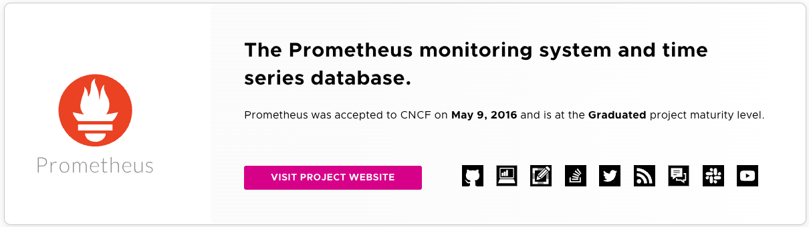
First, what's a data point?
Before we get into Prometheus, let's take a moment to look at what these data points are that
Prometheus is collecting. Observability data has a lifecycle with a number of different stages
that all present interesting challenges:
- Collection - deploy, discover and scale to match the workload
- Transport and store reliably
- Ability to query in a performant way
Life of a data point (collection)
A bee collecting nectar from flowers in a field makes a great analogy as to how data,
data points, collection, transport and storage work with Prometheus. The flowers in the field
hold the nectar to be collected. These monitoring targets (flowers) hold the data points
(nectar) that the bee collects (scraping) and then transports (exports) back to the hive (storage).
Life of a data point (transport)
Prometheus has the ability to find and scrape targets for data and collect them in a data
storage format for later analysis (query and alerts). Using exporters it can transport the
data back to time-series storage, just as bees are the transport mechanism for nectar back to
the hive.
Life of a data point (query)
Once in storage, Prometheus provides a query language that can then be used on this data
collection to generate reports, dashboard visualizations, and monitoring alerts. This is how
we turn our collected nectar (data points) into honey (visualizations).
What is Prometheus?
Prometheus is a metrics-based monitoring and alerting stack that provides libraries and server
components for:
- Tracking and exposing metrics (instrumentation)
- Collecting metrics
- Storing metrics
- Querying metrics for alerting, dashboard and visualization, etc
Why we are exploring Prometheus?
There are good reasons as to why you might want to try out Prometheus as you metrics
collection tooling as part of your open cloud native observability stack:
- Part of CNCF - graduated project, meaning in use across industries
- Easy getting started - very low bar to entry, single binary installations
- Open source standards - ingestion protocol and query language (PromQL)
- End point discovery - dynamic discovery on many platforms
- Ecosystem of exporters - integration with many projects and languages
Quick look at Prometheus
Prometheus as a user views a dashboard based on a PromQL query:
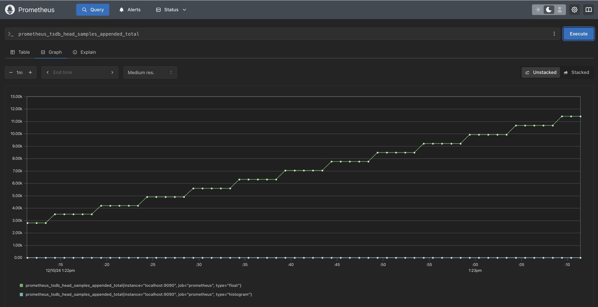
What does Prometheus not do?
It's also important to understand what Prometheus explicitly does not aim to solve:
These features are left to other systems to tackle alongside Prometheus in your architecture.
- Logging or tracing - only handles numeric metrics, known as time series
- Machine learning or AI-based anomaly detection
- Horizontally scalable, cluster storage
These features are left to other systems to tackle alongside Prometheus in your architecture.
Basic architecture - Prometheus
Let's walk through the basic overview of how Prometheus is most commonly used, starting with
first deploying Prometheus with its default in memory time series database (TSDB):
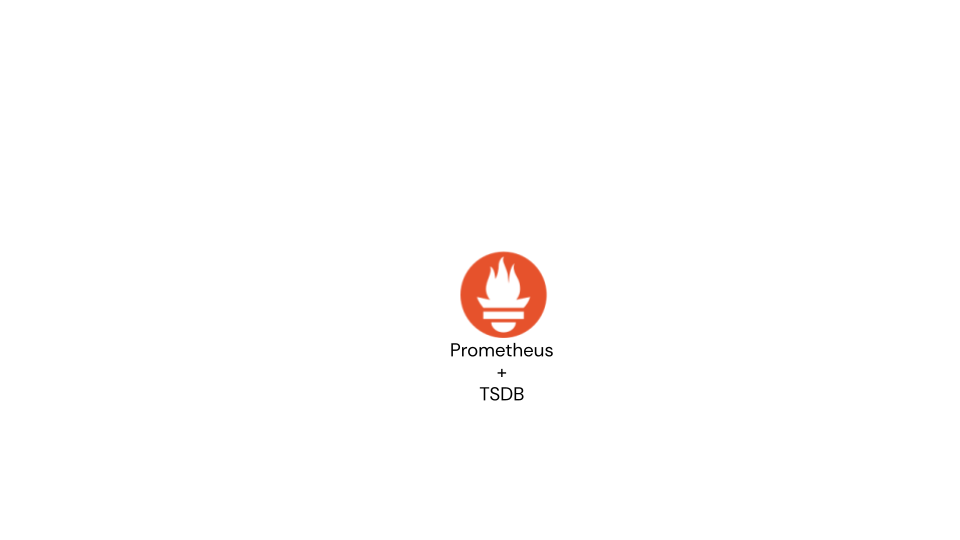
Basic architecture - Instrumented services
You can configure Prometheus to scrape instrumented services that use a specific client library:
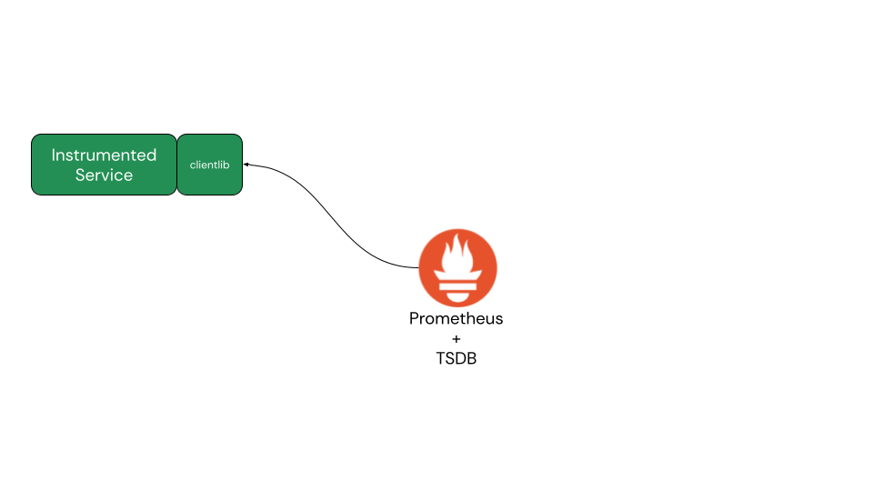
Basic architecture - Third-party services
You can configure Prometheus to scrape third-party services using one of many available exporters:
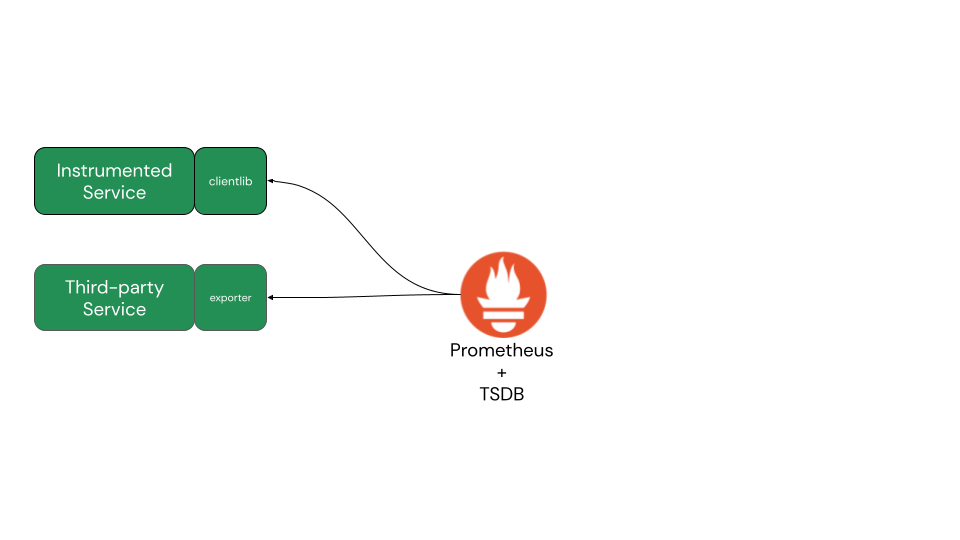
Basic architecture - Device metrics
You can configure Prometheus to scrape devices using one of many available exporters:
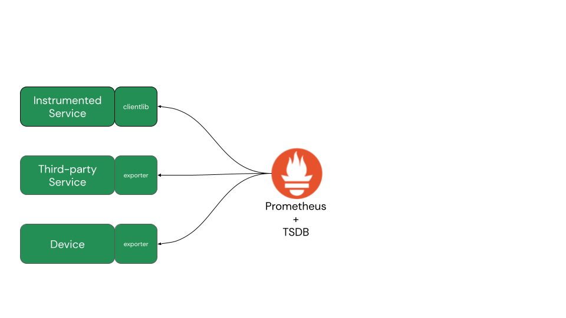
Basic architecture - Service discovery
Instead of static configuration for each service, device, pod, or container, Prometheus offers
a service discovery mechanism to detect dynamic endpoints (pods, containers, services, etc.) as
they spin up:
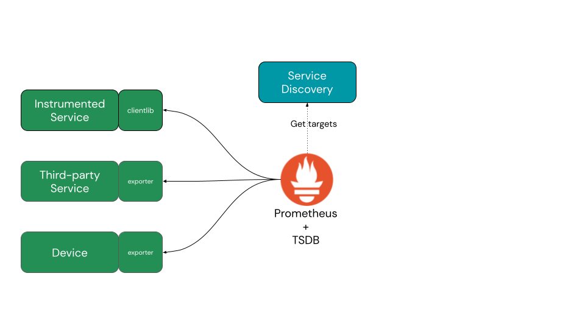
Basic architecture - Dashboard and visualization
Dashboards provide users visual representations of the gathered metrics data and is pulled from
the TSDB using the Prometheus Query Language (PromQL). The Prometheus console ships with a
built-in PromQL query builder, analyzer, and visualizer, great for learning PromQL:
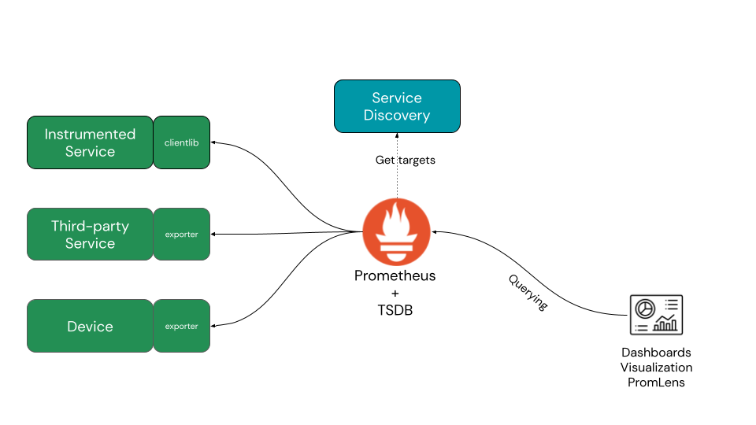
Basic architecture - Alert manager
Alert Manager uses queries to decide when notifications need to trigger by setting thresholds
that cause actions to be defined when they are reached:
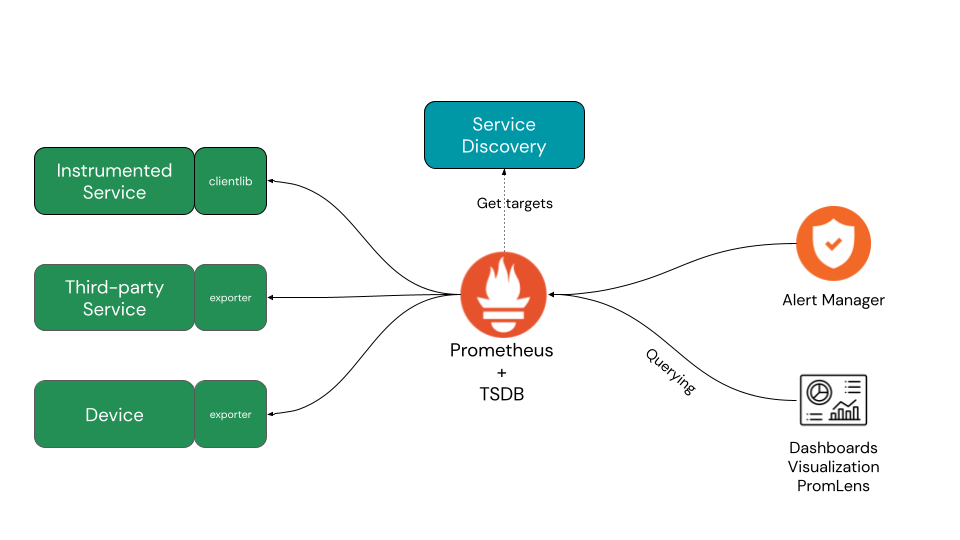
Basic architecture - Sending notifications
Notifications that trigger through the Alert Manager can be sent to many different options as
shown:
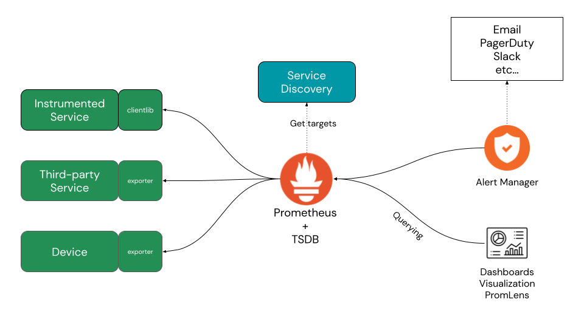
What's in the Prometheus toolbox?
Prometheus has powerful tools and features to assist you in monitoring your distributed systems:
- Dimensional data model - for multi-faceted tracking of metrics
- Query language - PromQL provides a powerful syntax to gather flexible answers across your gathered metrics data
- Time series processing - integration of metrics time series data processing and alerting
- Service discovery - integrated discovery of systems and services in dynamic environments
- Simplicity and efficiency - operational ease combined with implementation in Go language
Prometheus - Dimensional data model
Prometheus has defined a data model for tracking metrics known as time series, or streams of
numeric values sampled over continuous timestamps. A visual representation below shows how each
series (flow of values) is sampled over set time intervals:
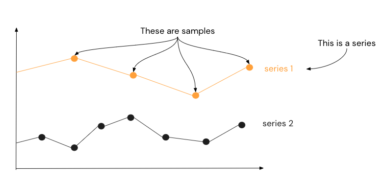
Time series - Identifiers and sample values
A time series is made up of an
identifier and a set of sample values.
Below you see an example for each one:- Time series identifier
- Sample values (timestamp, value)
http_requests_total{job="apiserver", handler="/api/comments"}
(t1, v1), (t2, v2), ...
Time series - Metric name and labels
Breaking down the
identifier further, we get to the metric name and
labels as shown below with the previous example:- Metric name
- Labels
job="apiserver"- label name = job
- label value = "apiserver"
handler="/api/comments"- label name = handler
- label value = "/api/comments"
http_requests_total
What do metrics look like in transit?
Say you are running a service and having Prometheus scrape metrics from an exposed HTTP
endpoint. The output of this endpoint is very human-readable, for example:
# HELP demo_num_cpus The number of CPUs.
# TYPE demo_num_cpus gauge
demo_num_cpus 4
...
PromLabs provides an example
endpoint (click here to open) where you can view the output in your browser.
Prometheus - Query language
Now that we have data collected by Prometheus, what can we do with it? Luckily, there's PromQL,
a functional language that is optimized for evaluating flexible and efficient computations on
time series data. In contrast to SQL-like languages, PromQL is only used for reading data, not
for inserting, updating, or deleting data. The Prometheus console gives you a query tree and an
EXPLAIN tab for learning and ease of use. In a later lab you will become
familiar with PromQL.
What does PromQL look like?
For now let's just take a quick look at what a simple query on a metric looks like. The tool
pictured here is PromLens, a standalone project that was archived in 2026 after its query
view was merged into the Prometheus console. That console is what you'll be using later in this
workshop, so treat this as a look at where the tooling came from:
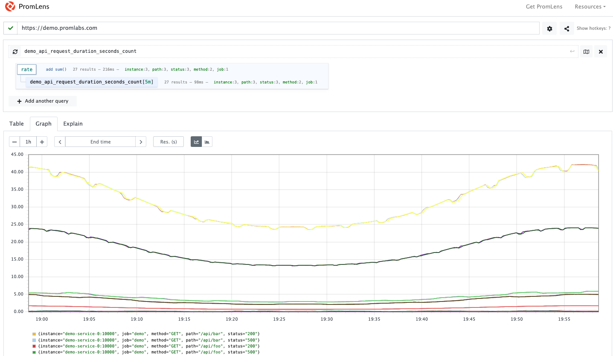
Prometheus - Time series processing
Prometheus provides an integrated alerting engine for processing PromQL based alerting rules. An
example rule for alerting could look like this:
groups:
- name: example
rules:
- alert: HighRequestLatency
expr: job:request_latency_seconds:mean5m{job="myjob"} > 0.5
for: 10m
labels:
severity: page
annotations:
summary: High request latency
This alert rule fires if Prometheus finds a latency for "myjob" greater than 0.5s and the alert
continues to be active during each evaluation for 10m. The labels allow adding a set of
additional labels to an alert. We'll explore alerts further later in this workshop.
Prometheus - Service discovery
Modern infrastructure architectures are both dynamic and challenging with cloud native leading
the way in the level of dynamic complexity it generates for observability. Cloud environments,
virtual machines, container orchestration, and microservices are all needs for integration with
common cloud native service discovery providers.
Prometheus - Service discovery architecture
Prometheus integrates service discovery to achieve the following:
- Create view of what targets should exist, to alert if any are missing
- Obtain technical insights into how to pull metrics from any target via HTTP
- Enriching collected time series data with labeled metrics about the target
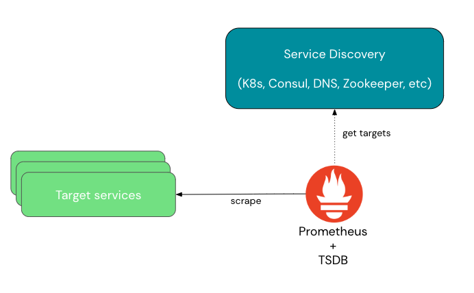
Prometheus - Simplicity and efficiency
Prometheus is designed to be conceptually simple and easy to operate due to the following:
- Written in Go, released static binaries deployed without dependencies
- No external runtime (JVM) or shared system libraries needed
- Highly optimized scraping and parsing of incoming metrics
- Highly optimized reading and writing to its TSDB
- Highly optimized evaluation of PromQL queries on TSDB data
Prometheus - What about at cloud native scale?
Each Prometheus server operates independently and is storing data locally without clustering
or replication. When you need to set up high availability (HA), for example with alerting, for
your observability solution you'll quickly discover the design has limits. Below the simple
design of Prometheus in a HA setup, it's now generating duplicate alerts:
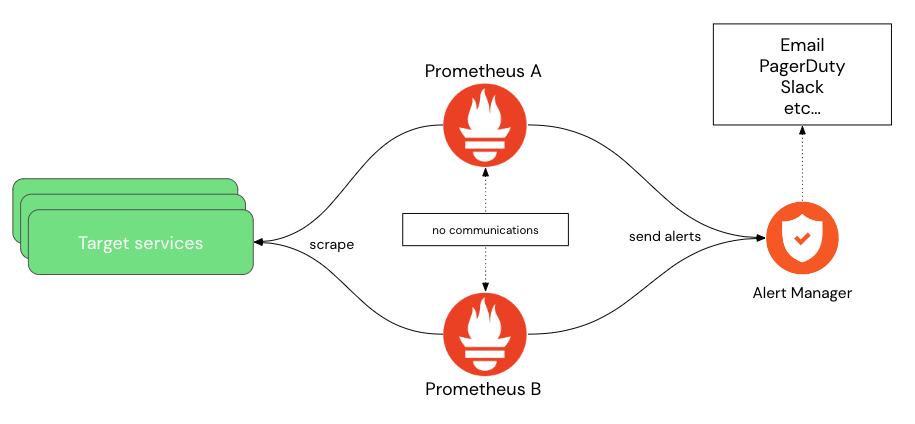
Don't worry, running Prometheus at scale is covered in later lab in this workshop!
Lab completed - Results
You have gained a basic understanding of the Prometheus project, what it is designed to do,
what it can not do. We looked at what a data point is, walked through the Prometheus
architecture, metrics, time series data, and touched on the PromQL query language. Finally,
we learned what service discovery and finally touched on the simple design limits on Prometheus
at scale.
Next up, installing Prometheus project on your machine...
Next up, installing Prometheus project on your machine...

Contact - are there any questions?
Eric D. Schabell
Director Evangelism
Contact: @ericschabell {@fosstodon.org) or https://www.schabell.org
Director Evangelism
Contact: @ericschabell {@fosstodon.org) or https://www.schabell.org